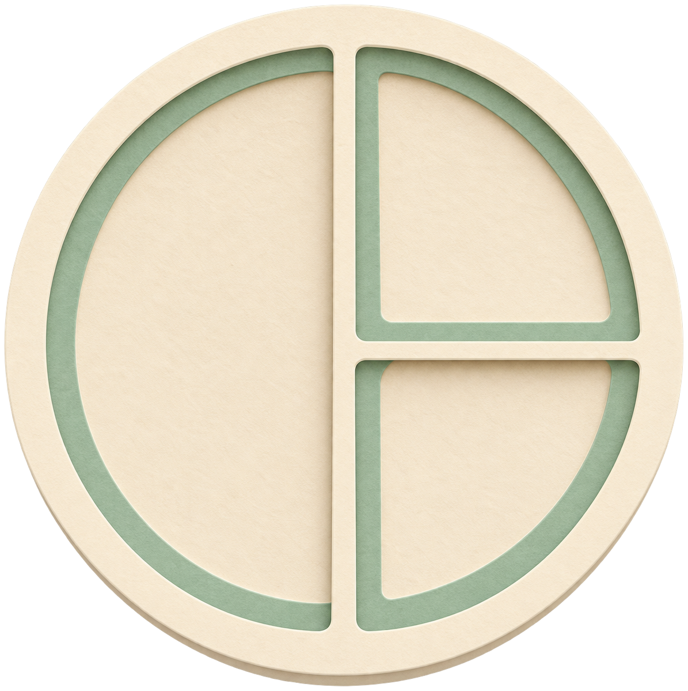
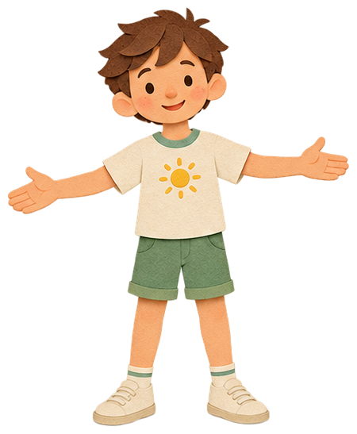
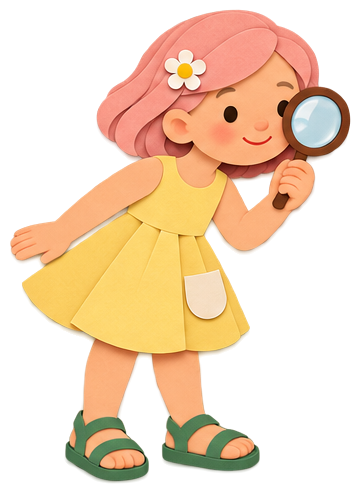
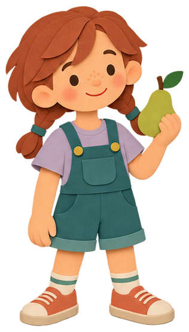
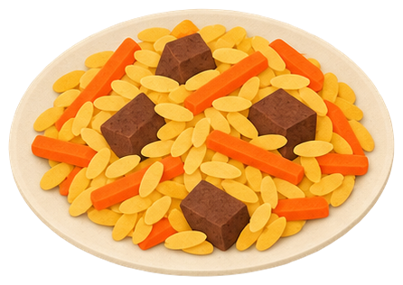
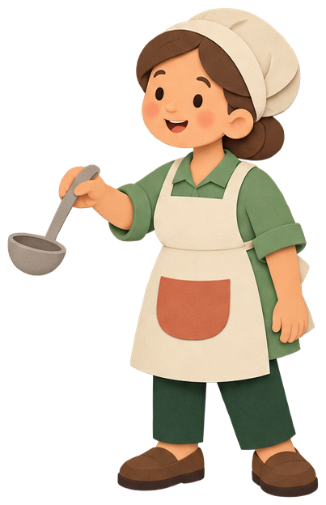
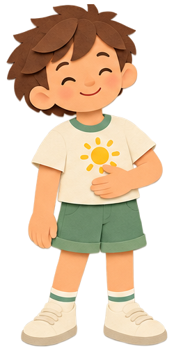
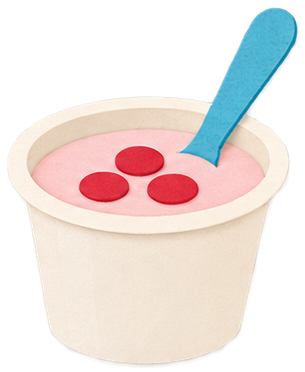
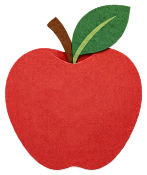
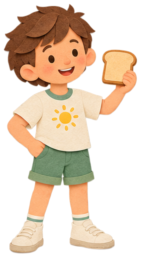

Собери тарелку
Завтрак, обед и ужин. Кто в какую часть?


Найди клетчатку
Где есть клетчатка, а где нет?


Ланч-бокс для друга
Собери обед в школу по заказу.


Что в блюде?
Найди друзей в плове, супе и блинчиках.


Правда или миф
10 карточек: что верно о еде?

Что говорит живот?
Голоден, сыт, хочется пить — как поступить?

Собери перекус
Фрукт + ещё один друг. И попить.



Для взрослых
Главная мысль: «Позови на тарелку трёх друзей» — овощи и фрукты (половина), крупы и хлеб, белок. Та же формула, что у Canada's Food Guide, MyPlate и Гарвардской тарелки. Деления продуктов на «утренние» и «вечерние» в рекомендациях нет.
Ошибаться можно. Ребёнок сам решает, куда положить еду. Ошибка — это подсказка: продукт возвращается, герой объясняет, после второй попытки нужное место подсвечивается. Еду не делим на хорошую и плохую: сладкое — «иногда», без запрета.
Сколько есть — решает ребёнок. Взрослый решает, что, когда и где предложить; ребёнок — есть ли и сколько (Эллин Саттер, AAP).
Клетчатка есть только в растениях. Она помогает пище двигаться по кишечнику и служит пищей полезным микробам. Формулу «выводит токсины» мы не используем: доказательств нет. Ориентир для взрослых (SACN): около 20 г в день в 5–11 лет, 25 г в 11–16 лет — ребёнку считать не нужно.
Спорное: картофель в MyPlate считается крахмалистым овощем, у Гарварда — нет. В играх он относится к «Крупам и хлебу» как гарнир. Фасоль принимается и как белок, и как овощ.
Подробно — docs/FACT-CHECK.md. Источники: Canada's Food Guide · MyPlate · Harvard · ВОЗ · AAP: клетчатка · Ellyn Satter